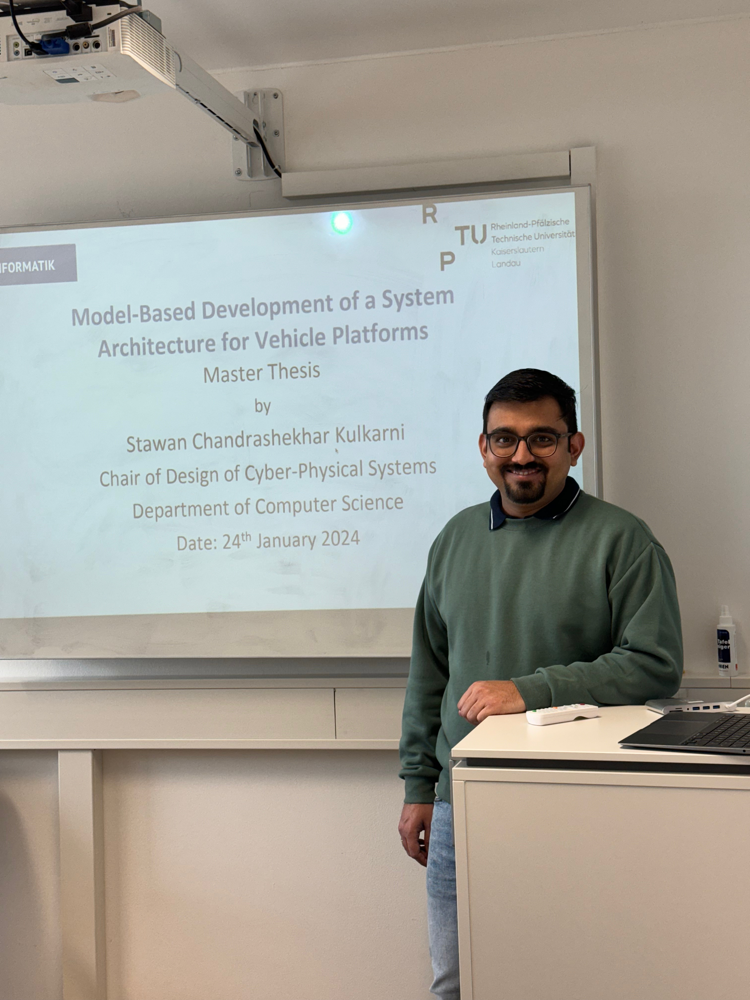

master thesis · rptu kaiserslautern · jan 2024
Model-Based Development of a System Architecture
for Vehicle Platforms
| author | Stawan Chandrashekhar Kulkarni |
| tool | SysMD / SysML v2 |
| method | OOSEM |
| domain | ADAS · ACC System |
| university | RPTU Kaiserslautern-Landau |

colloquium presentation · rptu kaiserslautern-landau · jan 2024
abstract
In today's automotive market, significant strides have been made in reducing time-to-market for new software features. The research projects GENIAL! and KI4Boardnet tackle this challenge by offering solutions to issues encountered during the initial phases of developing automotive microelectronic components. The SysMD modelling language, developed by the Chair of Design of Cyber-Physical Systems at RPTU Kaiserslautern-Landau, plays a crucial role by ensuring completeness and consistency during the specification phase.
This thesis creates specification models of the logical and physical architecture of an adaptive cruise control (ACC) system using SysMD. The models detail component specifications and their connections at the pin level, enabling precise specification of how components interconnect within the system. Additionally, the models support assessment of overall weight and cost parameters for involved components. The geometric perspective is grounded in installation-space models, facilitating weight distribution analysis that indirectly influences the vehicle's dynamic performance. The developed models also demonstrate SysMD's capability to enhance multiple phases of the systems engineering process.
key_topics
downloads
Presented at RPTU Kaiserslautern-Landau as part of the M.Sc. Commercial Vehicle Technology programme, January 2024.